===============================
Subject: Greetings from Thailand
Sent: Thursday, May 01, 2003 1:23 AM
From: Bill Sundstrom
To: Betty Cassady
CC: Birgitta June Sundstrom; Dain Sidney Sundstrom
I got here late Sunday evening. By the time I got to my hotel it was midnight. I checked into the Sena Place Hotel. Cost was $30 USD per night, including breakfast. I was still keyed up about the journey so it was 3 AM before I got to sleep.
Monday, the 28th
I went to the Indian Embassy in the morning and applied for a visa. Another hugely overpriced and inefficient bureaucracy, they said I could collect it on Friday and I had to pay $74 for this excellent service. This is nearly twice the normal fee of $40. Being a US citizen sometimes has its faults. I met a guy from the UK and an Israeli girl, Annabelle, who encouraged me to move to the Khao San Road area. I went with them to check out the street. It's not the quiet place that I'm in - but it is more central. I grabbed a taxi back to my hotel where I ate and made an early evening of it.
Another Shot of Khao San Road
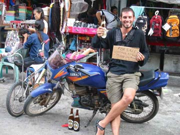
Notes on Bangkok:
This is a vast city. It is so large that a person can hardly know it all even if you lived your whole life here. The architecture is truly dull, boring, drab and downright ugly to me. Poured concrete is the preferred building material. Most of the streets are littered with vendors hawking all sorts of foods and wares. Than god for AC. The problem here is the humidity and rain. Dew points are usually above 21c or in the 70's. Most days the temp is in the 90's (above 32c). The odors in the air are strong and usually acrid unless you walk by one of the lovely flowering trees.
Tuesday, the 29th
I was visited by a Frank Lombard who is the friend of Alan Puzey who I met in New Zealand. Frank gave me some advice on places to visit here in Bangkok and he explained that the best and cheapest beach to head to is in Pattaya. About noon, I headed for the Khao San Road. After checking out several hotels, I settled on the D&D Inn; cost is $14 per night with no breakfast. One can get a room here for as low as $5 per night but with few or no amenities - the most important being AC.
The Tuk-Tuk, an Easy Form of Transport
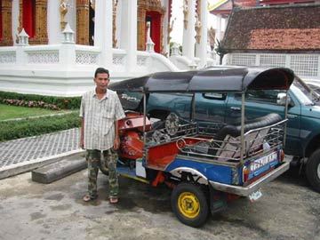
It started to rain, so I was grounded a bit. I went out about 3 PM. The rain had cooled things down and it was comfortable outside. I started a walk, but soon got a recommendation to check out a couple of temples. I took a tuk-tuk, a three wheeled motorized taxi. I didn't take long and the Buddha's were impressive. I also visited a knockoff tailor shop. I think the tuk-tuk drivers collect a fee for such a stop.
Back in Khao San Road, I took pictures ant tried to get a sense of it with all the tourists and Thai vendors. After diner I went back to my room, when I got a bit sick. Less than 48 hours here, the dreaded eccoli bacteria must be airborne here. So that was it for the day. I just wasn't going out feeling like that. Thank god for Cipro.
More to come shortly,
Love,
Bill
===============================
The Magnificent Wat Pho
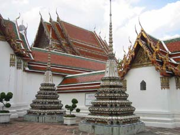
Subject: Wat Pho
Sent: Thursday, May 01, 2003 2:07 AM
From: Bill Sundstrom
To: Betty Cassady
CC: Birgitta June Sundstrom; Dain Sidney Sundstrom
More pictures attached
Wednesday, the 30 of April
I didn't do a lot. I slept late. Then I walked to the National Museum, where I got the jist of Thai history. And saw Buddha, Buddha, Buddha, and more Buddha. Have not gotten enough of Buddha, I took a walk where I stopped at Wat Pho. Now here was an awesome temple. It took my breadth away. I took lots of pictures.
More of Wot Pho
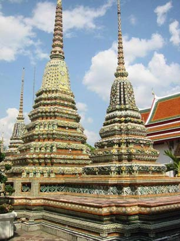
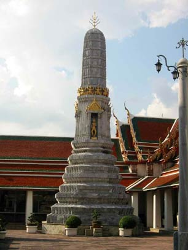
The heat and the smells of the city really got to me, especially since I still wasn't 100%, but I pushed through. Lots of Thai men struck up conversations with me - some to practice English, others to get my money. Tired I took a tuk-tuk back to Khao San Road, rested, ate, watched some TV and showered.
Ready for the night, I grabbed a cab to Soi Cowboy in Sukhumvit Road area on the advice of Frank Lombard. I expected to see a dance club and bar district. In a sense it was, but not the one that I had imagined. Here was a street to view and meet women. Most of the bars had topless dancers, some bottomless. I decided to check it our. I went from bar to bar spending about a half hour in each while I drank a soft drink. Keeping a straight head was important, because in many of the bars I was approached and handled with arm, leg, back, etc. massages. Good or bad, I just wasn't into the sort of adventure likely to follow such goings on. Finally, I took a taxi back to Khao San Road about one in the morning.
Today I will see the big palace nearby, lay by the pool on the roof of my hotel and take it easy tonight. Tomorrow I will head for Pattaya.
Love,
Bill
===============================
The Birdey's Nest of Pattaya in the Foreground
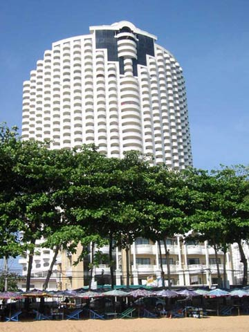
Subject: To the Beach in Pattaya
Sent: Monday, May 05, 2003 12:05 AM
From: Bill Sundstrom
To: Betty Cassady
CC: Birgitta June Sundstrom; Dain Sidney Sundstrom
May Day, 2003
It was a very low-key day. It was a holiday, Labor Day. I spent several hours at an Internet place writing and sending email and checking the bank accounts. I realize finally what the big charge was from Perth; it was my ticket to India. How could I forget! When I was done it was 2:30 and I started toward the Grand Palace. I had heard earlier that it was open, but on the way the story had changed. Unsure and with rain in the air, I decided just to take it easy. I went up on the roof om my hotel and watched the people below. I drank a couple of beers. Man is the Singha beer ever strong here. I talked with a guy form the Isle of Jersey. Eventually after some TV and diner (Green/Red curry for the 2nd time and quite good) I went over to the only pub I could find on Khao San Road: sports TV, pool, tables and lots of people - both tourists and Thai's - having a good time. I met Anchana, who spoke good English and the conversation was good.
Friday, May 2nd
I went to the Indian Embassy. Once through the line they made me wait another hour but eventually I got my visa. While there, I saw Annabelle again. I told her that I was going to Pattaya. She had spent the last few days there and recommended a place. The bus ride to Pattaya was interesting. It showed what an industrialize area it is around Bangkok with factories and construction equipment everywhere. I decided to stay in the quieter Jomtiem Beach and got a nice room on the beach with a view for 600 baht ($14 USD). I had an early diner of seafood and wine. Only the wine was expensive, 500 baht.
One View of Jomtiem Beach
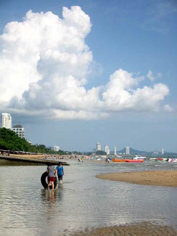
Saturday and Sunday:
Right across the street from Birdey's Nest, my hotel, is the beach. The area is sheltered by the bay and island, so the surf is pretty much non-existent. The Jomtiem beach is quieter and cleaner than the Pattaya Beach. Mainly but not quite exclusively, it is used by Thai families. The beach has a long ribbon of umbrellas, under which are lounge chairs and table. Most anything you need to eat or drink can be brought to your table. Then sun is strong. The beach is very narrow at high tide, but midday - during low tide - it widens to 30 meters. The most popular thing people do beside wade and swim and ride the banana boats. Within one minute or so, I saw 15 go by in different directions. Thai's swim in all their clothes. The most common attire is shorts and a t-shirt, but long pants, blouses or shirts, etc. were not uncommon. What was extremely uncommon was a swim suite for a man or a woman. These days were about the same on the beach, except more people were there on Sunday.
Saturday evening I had a nice diner of Thai seafood. The Thai food is not all hot but much of it is very spicy. And I like it quite a bit, especially the curry dishes. After diner I went to south Pattaya in search of an Irish pub and maybe a dance club. I didn't find either. I couldn't find the Irish place because it ended up being in north Pattaya. Where I ended up was the Bamboo Bar. It was one of the few places with good, live music. The place really brought home the phenomena of the white-male / Thai-female couple. Nowhere has it been more apparent than on the dance floor of the Bamboo Bar. The bar was filled with couples. Most all the men were white and between 45 and 70. The women were all Thai between the ages of 25 and 45. These were the girl friends, wives, and lovers of these men. It made sense to me too. In most every other bar and pub a single man walks in and is greeted by a warm, exotic Thai woman who only wants to be pleasing whether they are a working hostess or just there to meet an equally exotic 'wealthy' foreigner. And before long they become friends, lovers and even wives.
Another View of Jomtiem Beach
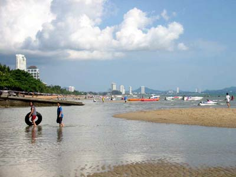
On Sunday evening, I thought that I would stay away from the craziness of south Pattaya. After diner in a quieter street, I looked around. Here it was not crowded and full of loud music. Just a dozen or so bars, but each had at least a half-dozen single women that I assume where looking for companionship. I stayed long enough to play three games of pool before calling it a night.
The other thing that I had really begun to pay attention to here was all the visitors from Scandinavia, especially Denmark. For whatever reason, there are many, many Danes here. In Bangkok I had noticed them and some Danish flags in store windows. Then on Saturday night in the Tuk-Tuk ( the back of a pickup truck here), I met a Danish couple from Espejere - who have been coming here twice a year for the past ten years. In the street of Sunday night, I not only saw Danish language signs and flags, I say bars with Danish names.
Well that's it for now.
I will go to Bangkok on Wednesday and then to Chaing Mai on Thursday or Friday. I haven't been taking many pictures on the beach. I will try to send some soon.
Love,
Bill
===============================
Subject: I'm in Chiang Mai
Sent: Thursday, May 08, 2003 3:54 AM
From: Bill Sundstrom
To: Betty Cassady
CC: Birgitta June Sundstrom; Dain Sidney Sundstrom
Monday and Tuesday were much the same as the past few days on the beach. Monday was a holiday, so there was still somewhat of a crowd on the beach. But Tuesday was near deserted and it was nice to have an extremely quiet day on the beach. A Frenchman towed his two-seat ultra-light aircraft down on the low tide beach. He used it as a landing strip, doing a number of touch-and-go's as well as some flying along the coast line. I suddenly had a great urge to go flying. The evenings got progressively later, but still pretty early, playing pool and drinking Carlsberg beers. Don't be confused by the picture of Birdey's Nest; the nest is the smaller building in the fore ground not the giant condo in the background.
Yesterday, Wednesday the 7th of May
I took a bus to Bangkok. I had a bad night of sleep and I tried to sleep during the two-hour bus ride. I took a taxi to Khao San Road. Before checking into a hotel, I checked about a flight to Chiang Mai. The cost for the shuttle bus and for the 700 km flight was less than $60. I asked if I could get a flight out 'today' and sure enough I could make a 5:15 flight. I was settled by 8 PM. I called Dain's friend, Jason Dillon, and he agreed to come by on his motor bike. For some reason I had envisioned older guy who had been living here for several years. Wrong on all points, he is a youthful 26 and has only been here since January. Even then he hasn't done many touristy things, so I suggested that we do a few of them together and he seemed pretty amenable to the idea. We drank beer, ate diner and played pool. I am actually getting pretty good at pool and won several games. I called it a night about one in the AM and finally slept great. I made up for the night before by sleeping until 11 this morning.
First impression of this city are positive. It's still hot yet a tad bit less humid. It has a real architecture to it. There are lots of little day trips to do to surrounding area, the most expensive costing about $23.
I will write again soon.
Love,
Bill
===============================
Subject: Chiang Mai 2
Sent: Sunday, May 11, 2003 7:42 AM
From: Bill Sundstrom
To: Betty Cassady
CC: Birgitta June Sundstrom; Dain Sidney Sundstrom
Except for the weather Chiang Mai is a decent place, a bit exotic, with really good food. I should be happy here, but I really am not. I'd rather be home or in Australia.
After I wrote to you on Thursday afternoon, I rented a 100cc motor bike for a week for $20 USD. At first I just rode for a while. Motor bikes are the primary mode of personal transportation here - the streets are full of them. I check out another guest house and decided to move; its cheaper ($9 per day) with AC & cable TV & phone. In the night Jason and I went to a really cool restaurant in the old walled city. The good was great. Then we hung out at his bar again. I headed to my hotel about one in the AM.
Friday, I slept late again. I guess I just don't want to leave the AC. I packed, ate breakfast and moved to the Pagoda Inn. Then it was off to visit temples. I went to abut eight or nine Wats. I got steered to a tailor shop again and ended up ordering one silk shirt for about $45. In the evening Jason and I had diner again. Then we check out a bunch of clubs along the river. I really liked the first one - the Riverside. I also went to the Night Bazaar. They have lots of great things for sale cheap here.
Saturday, I picked up my shirt. Amazingly they made it over night. Davis the salesman tried me to order more - but I declined. I ran into him at the bar and he bought me a beer. He offered me an interesting proposition. He said that he would teach me to measure people for clothes and we could do a long distance business for people I know and I could make some dough on the side. The money wouldn't be all that important, but getting cheap tailor made clothes for friends and family would be a nice thing - I think.
Sunday Market Vendor
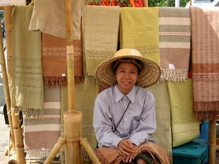
Jason and I rode our bikes up into the mountain to Wat Phra That Doi Suthep. A fantastic view of the city. Five to ten degrees cooler - heaven! And the nicest looking temple I've seen with lots of Thai worshipers. I also made a stop at the local mall. They are the same everywhere. Oh, what did we start when Southdale (the first mall in the US) was built. We got back into the city about 6, and then met up later at the bar.
Today, Sunday was really different. Many of the streets were closed down and people set up stands to sell stuff all over. And unlike the Night Bazaar, nearly everything seemed to come from somebody's mother or sister or another home-made source. I bought some shirts and silk with a batik print and some seed beads and a rough cotton table cloth all for next to nothing.
I did some riding then and ended up taking a two-hour river cruise. Its still Sunday, there are festivities going on just outside this internet place. I guess I will have to check it out.
Love,
Bill
River Excursion
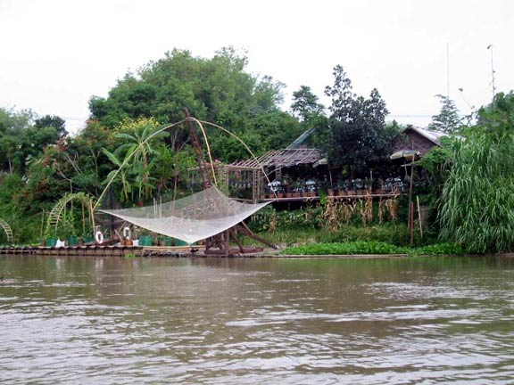
===============================
More of the Sunday Market
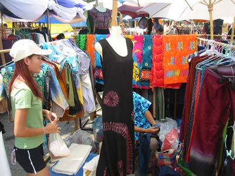
Subject: Last days in Chiang Mai
Sent: Tuesday, May 13, 2003 12:07 AM
From: Bill Sundstrom
To: Betty Cassady
CC: Birgitta June Sundstrom;
Dain Sidney Sundstrom
I decided to leave Thailand three days ahead of my original schedule. Chiang Mai is playing out for me and Jason and I won't get a chance to go to Pai. So, I thought move on. India is a big country, and I am not going to be able to see that much anyway. So, today I changed my tickets and tomorrow I am off to Calcutta.
Swimmers on the River
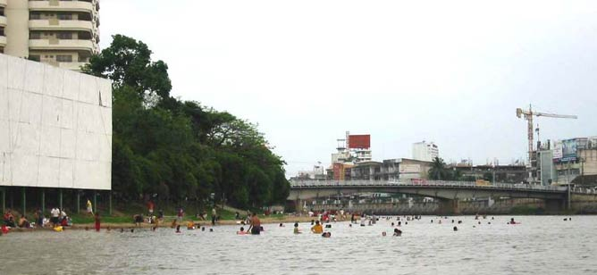
Yesterday, Monday the 12th:
I got another very late start. After breakfast, I arranged for my transportation back to Bangkok. I called Jason to go for a ride in the country side. He was supposed to be over to my place in an hour or a little after two, but it was more like three when he got there. We laid out a plan and headed out on our bikes. On the way, we stopped at his apartment - good sized but with almost no amenities. We were so late in going out, nothing much was open except the Orchid farm, which we decided to skip. The monkey show, the cobra show, the elephant rides were all a no go. We wound our way up into the hills after passing Mae Rim. The rout took us to the little village of Samoeng. We stopped here to have a beer with four young men at an open-air restaurant. They were Nut, Tree, Yo, and Pai. They were all in their teens and I think they worked at putting in electrical poles. I say think, because they spoke little or no English. They were drinking strawberry wine and having fish soup when we arrived. We headed off through the hills for Hang Dong and then back to Chiang Mai. Luckily, we arrived just as the sun was setting.
Two Men at the Temple
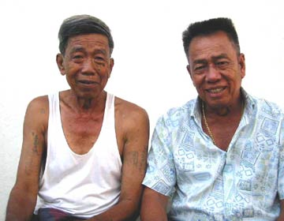
Jason wanted to stop at his bar, because he lives so far out of the center of town. After a beer, I headed over to get a few more things at the Night Bazaar. Jason will bring the few things I've bought when he goes to the states next week. While out shopping, it started to rain, no pour. When it eased up, I went to my guesthouse, ate, and fell asleep.
Much love,
Bill